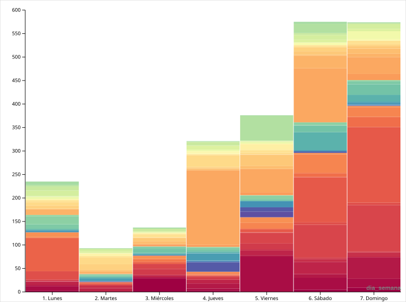

1. Centros de Gravedad: ¿Dónde estuve?
Este mapa interactivo muestra la distribución geográfica de mis capturas. El tamaño de los puntos representa la densidad de archivos, permitiendo identificar los "picos" de actividad física y digital donde se concentró mi año.

2. Cronogeografía: Tiempo y Espacio
Evolución temporal de mis registros. Esta visualización conecta el momento preciso del registro con su ubicación, permitiendo observar cómo mi huella digital se desplaza y transforma a lo largo de los meses.
3. Geografía de la Rutina: Buenos Aires
Filtro interactivo para entender cómo mis desplazamientos en el AMBA varían según el día de la semana. ¿Hacia dónde se mueve mi lente los lunes de oficina frente a los domingos de descanso?
Insertar aquí el Embed de Tableau Public (viz_4_tableau_ba.csv)
4. Ritmo Semanal: La Construcción del Hábito
Este análisis muestra el volumen acumulado de fotos por día de la semana. Cada barra se fragmenta por colores (semanas), permitiendo ver qué semanas específicas fueron anomalías de alta productividad.
